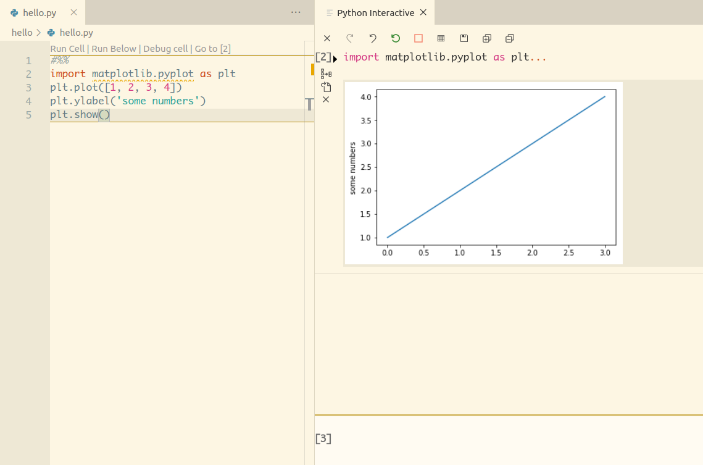

VS-code 小技巧
前言
VS-code (visual studio code) 是一款由微軟開發的程式編譯器，同時支援 Windows、MacOS 和 Linux 作業系統、開放原始碼以及很多的擴充套件可以使用，像是：預先偵錯、自動完成和預覽頁面等功能。
大學時期上程式課，老師就讓同學使用 Visual Studio 2010，當時用起來就覺得很笨重難用，一直對微軟的程式編譯器沒什麼好感。直到近期因緣又接觸到 VS-code 感到驚為天人，過去在用 Atom 一直被一些 Bug 困擾，現在使用 VS-code 有一種通體舒暢的感覺。
Python Extension
變更環境
Python Extension 可以讓你選用不同的系統環境：打開 Command Palette (cmd+shift+p) > 搜尋
Python:Select Interpreter > 選取你想要的 Python 版本環境。
用 Jupyter 跑 VS-code 上的 python code
因為 Jupyter 只適用 python 3.5 的版本，要更換系統上的套件版本可以說是大費周張的工程。這裡推薦 "Condaー系統環境管理" 可以生成任意組成的系統環境並且隨時切換，用 Conda 建立一個 python 3.5 的環境，再用上面的方法切換 vs-code 的 python 環境即可。
設定好環境之後，在 python code 的上方加入 #%%：
#%%
import matplotlib.pyplot as plt
plt.plot([1, 2, 3, 4])
plt.ylabel('some numbers')
plt.show()按下 Run Below 在右邊就會産生 Jupyter 視窗：

你也可以在下方打入其它的程式碼，就好像在用 Jupyter 一樣。這項功能的優點是不需要改檔名，用原來的 .py 就可以了！